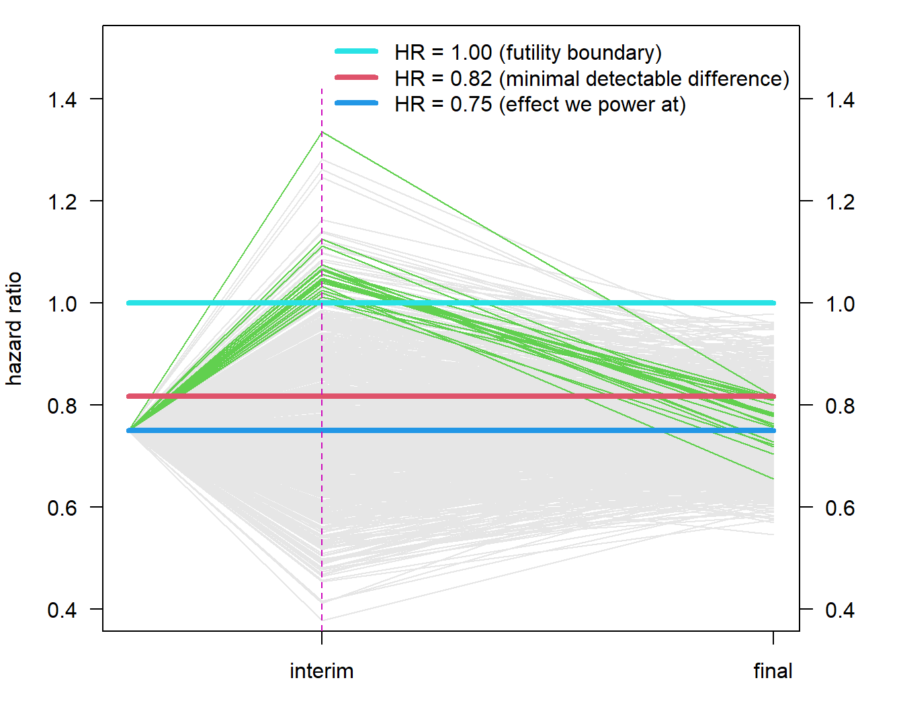

False-positive risk (power loss) when adding a futility interim analysis to a clinical trial
Author
Kaspar Rufibach, 2nd May 2024
Purpose of this document
This R markdown file accompanies this linkedin post, provides the code to reproduce computations, and much more. I also talked about this topic at the first 2024 effective statistician conference, find my slides here
Acknowldegments
I talk(ed) a lot about this broad topic with my Roche colleagues Marcel Wolbers, Jenny Devenport, Gian Thanei, Jianmei Wang, Gaelle Klingelschmitt, Uli Burger, and many others.
Setup and definition of functions
We define a few hand-knitted functions to simulate clinical trials. I am sure there would be off-the-shelf methods for this, but I simply reuse what I have already.
library(survival)library(rpact)
Warning: Paket 'rpact' wurde unter R Version 4.3.3 erstellt
library(reporttools)
Warning: Paket 'reporttools' wurde unter R Version 4.3.3 erstellt
Lade nötiges Paket: xtable
Warning: Paket 'xtable' wurde unter R Version 4.3.3 erstellt
# Quantile function for a Weibull distribution with a cure proportionqWeibullCure <-function(p, p0, shape =1, scale){ res <-rep(NA, length(p)) ind1 <- (p <= p0) ind2 <- (p > p0) res[ind1] <-Inf res[ind2] <-qweibull(1- (p[ind2] - p0) / (1- p0), shape = shape, scale = scale)return(res) }# censored time-to-event data with censoring after pre-specified number of eventsrWeibull1arm <-function(shape =1, scale, cure =0, recruit, dropout =0, start.accrual =0, cutoff, seed =NA){# shape Weibull shape parameter. # scale: Weibull scale parameter# cure: Proportion of patients assumed to be cured, i.e. with an event at +infty.# recruit: Recruitment.# dropout: Drop-out rate, on same time scale as med.# start.accrual: Time unit where accrual should start. Might be useful when simulating multi-stage trials.# cutoff: Cutoff, #events the final censored data should have (can be a vector of multiple cutoffs).# seed: If different from NA, seed used to generate random numbers.## Kaspar Rufibach, June 2014if (is.na(seed) ==FALSE){set.seed(seed)} n <-sum(recruit)# generate arrival times arrive <-rep(1:length(recruit), times = recruit) arrivetime <-NULLfor (i in1:n){arrivetime[i] <-runif(1, min = arrive[i] -1, max = arrive[i])} arrivetime <- start.accrual +sort(arrivetime)# generate event times: Exp(lambda) = Weibull(shape = 1, scale = 1 / lambda) eventtime <-qWeibullCure(runif(n), p0 = cure, shape = shape, scale = scale)# Apply drop-out. Do this before applying the cutoff below, in order to correctly count necessary #events. dropouttime <-rep(Inf, n)if (dropout >0){dropouttime <-rexp(n, rate = dropout)} event.dropout <-ifelse(eventtime > dropouttime, 0, 1) time.dropout <-ifelse(event.dropout ==1, eventtime, dropouttime) # observed times, taking into account staggered entry tottime <- arrivetime + eventtime# find cutoff based on number of targeted events# only look among patients that are not considered dropped-out time <-data.frame(matrix(NA, ncol =length(cutoff), nrow = n)) event <- time cutoff.time <-rep(NA, length(cutoff))for (j in1:length(cutoff)){ cutoff.time[j] <-sort(tottime[event.dropout ==1])[cutoff[j]]# apply administrative censoring at cutoff event[event.dropout ==1, j] <-ifelse(tottime[event.dropout ==1] > cutoff.time[j], 0, 1) event[event.dropout ==0, j] <-0# define time to event, taking into account both types of censoring time[event.dropout ==1, j] <-ifelse(event[, j] ==1, eventtime, cutoff.time[j] - arrivetime)[event.dropout ==1] # same as: pmin(tottime, cutoff.time) - arrive time[event.dropout ==0, j] <-pmin(cutoff.time[j] - arrivetime, time.dropout)[event.dropout ==0]# remove times for patients arriving after the cutoff rem <- (arrivetime > cutoff.time[j])if (TRUE%in% rem){time[rem, j] <-NA} }# generate output tab <-data.frame(cbind(1:n, arrivetime, eventtime, tottime, dropouttime, time, event))colnames(tab) <-c("pat", "arrivetime", "eventtime", "tottime", "dropouttime", paste("time cutoff = ", cutoff, sep =""), paste("event cutoff = ", cutoff, sep ="")) res <-list("cutoff.time"= cutoff.time, "tab"= tab)return(res)}# censored time-to-event data with censoring after pre-specified number of events, for two treatment armsrWeibull2arm <-function(shape =c(1, 1), scale, cure =c(0, 0), recruit, dropout =c(0, 0), start.accrual =c(0, 0), cutoff, seed =NA){# shape 2-d vector of Weibull shape parameter. # scale 2-d vector of Weibull scale parameter.# cure: 2-d vector with cure proportion assumed in each arm.# recruit: List with two elements, vector of recruitment in each arm.# dropout: 2-d vector with drop-out rate for each arm, on same time scale as med.# start.accrual: 2-d vector of time when accrual should start. Might be useful when simulating multi-stage trials.# cutoff: Cutoff, #events the final censored data should have (can be a vector of multiple cutoffs).# seed: If different from NA, seed used to generate random numbers.## Kaspar Rufibach, June 2014if (is.na(seed) ==FALSE){set.seed(seed)} dat1 <-rWeibull1arm(scale = scale[1], shape = shape[1], recruit = recruit[[1]], cutoff =1, dropout = dropout[1], cure = cure[1], start.accrual = start.accrual[1], seed =NA)$tab dat2 <-rWeibull1arm(scale = scale[2], shape = shape[2], recruit = recruit[[2]], cutoff =1, dropout = dropout[2], cure = cure[2], start.accrual = start.accrual[2], seed =NA)$tab n <-c(nrow(dat1), nrow(dat2))# treatment variable tmt <-factor(c(rep(0, n[1]), rep(1, n[2])), levels =0:1, labels =c("A", "B")) arrivetime <-c(dat1[, "arrivetime"], dat2[, "arrivetime"]) eventtime <-c(dat1[, "eventtime"], dat2[, "eventtime"]) tottime <-c(dat1[, "tottime"], dat2[, "tottime"]) dropouttime <-c(dat1[, "dropouttime"], dat2[, "dropouttime"])# Apply drop-out. Do this before applying the cutoff below, in order to correctly count necessary #events. event.dropout <-ifelse(eventtime > dropouttime, 0, 1) time.dropout <-ifelse(event.dropout ==1, eventtime, dropouttime) # find cutoff based on number of targeted events# only look among patients that are not considered dropped-out time <-data.frame(matrix(NA, ncol =length(cutoff), nrow =sum(n))) event <- time cutoff.time <-rep(NA, length(cutoff))for (j in1:length(cutoff)){ cutoff.time[j] <-sort(tottime[event.dropout ==1])[cutoff[j]]# apply administrative censoring at cutoff event[event.dropout ==1, j] <-ifelse(tottime[event.dropout ==1] > cutoff.time[j], 0, 1) event[event.dropout ==0, j] <-0# define time to event, taking into account both types of censoring time[event.dropout ==1, j] <-ifelse(event[, j] ==1, eventtime, cutoff.time[j] - arrivetime)[event.dropout ==1] time[event.dropout ==0, j] <-pmin(cutoff.time[j] - arrivetime, time.dropout)[event.dropout ==0]# remove times for patients arriving after the cutoff rem <- (arrivetime > cutoff.time[j])if (TRUE%in% rem){time[rem, j] <-NA} }# generate output tab <-data.frame(cbind(1:sum(n), tmt, arrivetime, eventtime, tottime, dropouttime, time, event))colnames(tab) <-c("pat", "tmt", "arrivetime", "eventtime", "tottime", "dropouttime", paste("time cutoff = ", cutoff, sep =""), paste("event cutoff = ", cutoff, sep ="")) res <-list("cutoff.time"= cutoff.time, "tab"= tab)return(res)}# functions to plot resultshoriz <-function(vert =FALSE){segments(0, 1, 1, 1, col =5, lwd =4, lty =1)segments(0, hr, 1, hr, col =4, lwd =4, lty =1)segments(0, mdd_no_interim, 1, mdd_no_interim, col =2, lwd =4, lty =1)legend("topright", paste("HR = ", disp(c(1, mdd_no_interim, hr), 2), " (", c("futility boundary", "minimal detectable difference", "effect we power at"), ")", sep =""), bty ="n", lty =1, col =c(5, 2, 4), lwd =4)# vertical lineif (vert){segments(inter_x[1], 0, inter_x[1], 1.42, lty =2, col =6)}}plot_empty <-function(){ inter_x <- cutoff /max(cutoff) yli_traj <-c(0.4, 1.5)par(las =1)par(mar =c(3, 4, 1, 4), las =1)plot(0, 0, type ="n", xlim =c(0, 1), ylim = yli_traj, xlab ="", xaxt ="n", ylab ="hazard ratio")axis(side =4, at =seq(0, 2, by =0.2), labels =disp(seq(0, 2, by =0.2), 1))axis(side =1, at = inter_x[2], labels =c("interim", "final")[2])}
Trial design
First, let us specify the basic parameters of a Phase 3 clinical trial with a time-to-event endpoint:
# trial operating characteristicsalpha <-0.05beta <-0.2# exponential survival functions m1 <-6*12m2 <-8*12med <-c(m1, m2)# effect to have 80% power athr <- m1 / m2# accrualrecruit1 <-rep(25, 16)recruit2 <- recruit1recruit <-list(recruit1, recruit2)n <-sum(unlist(recruit))start.accrual <-c(0, 0)# drop-out (2.5% annually)dropout.year <-0.025dropout.month <--log(1- dropout.year) /12dropout <-rep(dropout.month, 2)# cure proportion cure <-c(0, 0)# We assume the shape parameter of the Weibull distribution is = 1.# Compute the scale parameter corresponding to the above median for Exponential:lambda <-log(2) / medscale <-1/ lambda# specification of interim analysisinfo_interim <-0.3futilityHR <-0.9
So we plan a trial assuming:
1:1 randomization,
a futility interim analysis after 30% of events,
80% power to
detect a hazard ratio (HR) of 0.75
using a two-sided logrank test
with a significance level of 0.05.
Simulation of trials with and without futility interim analysis
We will simulate such trials to illustrate the false-positive risk of a futility interim. For the simulation we need to specify a few more quantities:
# Required events without interimnevent <-getSampleSizeSurvival(lambda1 =getLambdaByMedian(m2), lambda2 =getLambdaByMedian(m1), sided =1, alpha = alpha /2, beta = beta)mdd_no_interim <- nevent$criticalValuesEffectScale[1, 1]nevent <-ceiling(nevent$maxNumberOfEvents)# cutoffseventsInterim <-ceiling(info_interim * nevent)cutoff <-c(eventsInterim, nevent)# number of simulationsM <-10^3# now simulate trials and record hazard ratios at interim and final analysis cutoffresHR <-data.frame(matrix(NA, nrow = M, ncol =length(cutoff)))colnames(resHR) <- cutoffresp <- resHRfor (i in1:M){ res2arm <-rWeibull2arm(scale = scale, shape =c(1, 1), cure = cure, recruit, dropout, start.accrual, cutoff, seed =NA)$tabfor (j in1:length(cutoff)){# compute hazard ratio for this cutoff tmt <- res2arm[, "tmt"] time <- res2arm[, paste("time cutoff = ", cutoff[j], sep ="")] event <- res2arm[, paste("event cutoff = ", cutoff[j], sep ="")] cox1 <-summary(coxph(Surv(time, event) ~ tmt)) resHR[i, j] <-exp(coef(cox1)[1]) resp[i, j] <-coef(cox1)[1, "Pr(>|z|)"] }}
Quantification of power loss of interim analysis, and graphical illustration
We have now 1000 simulated trials with a hazard ratio estimate at the interim and final analysis. First, let us plot results assuming there would be no interim analysis. The horizontal lines correspond to the futility boundary, the minimal detectable difference (i.e. the hazard ratio we need to observe at the final analysis to be statistically significant), and the hazard ratio for which we specified the sample size to have 80% power at. They grey lines illustrate the hazard ratios we observe at the final analysis using these assumptions, with green lines those trials that would be statistically significant, i.e. land below the red horizontal line. These are 79.9% of trials (an estimate of the power).
plot_empty()# plot trajectories to final onlysegments(0, hr, 1, resHR[, 2], col =grey(0.9), lty =1)# significant trajectoriessegments(0, hr, 1, resHR[resHR[, 2] <= mdd_no_interim, 2], col =3, lty =1)horiz()
Now, we know that by adding a futility interim we reduce trial power, because we erroneously stop some trials that would be statistically significant at the final analysis. But how many? In order to find out we have to filter out those trials for which
the hazard ratio at the interim analysis is above 1 (i.e. the interim boundary for futility) but
below 0.818, i.e. the minimal detectable difference at the final analysis.
plot_empty()inter_x <- cutoff /max(cutoff)axis(side =1, at = inter_x[1], labels =c("interim", "final")[1])# all trajectories including interimsegments(0, hr, inter_x[1], resHR[, 1], col =grey(0.9), lty =1)segments(inter_x[1], resHR[, 1], 1, resHR[, 2], col =grey(0.9), lty =1)# color the false negatives: stopped at interim but sig at finalind <- (resHR[, 1] >1& resHR[, 2] <= mdd_no_interim)segments(0, hr, inter_x[1], resHR[ind, 1], col =3, lty =1)segments(inter_x[1], resHR[ind, 1], 1, resHR[ind, 2], col =3, lty =1)horiz(vert =TRUE)

The plot above indicates those 2.2% of trials that would be erronously stopped at the futility interim analysis. This is what is typically called the power loss of the futility interim analysis.